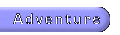

SPOILER ALERT
The following pages contain information that is vital to finishing Sonic Adventure. If you do not want to learn any hints or tips and would like to solve the game by yourself, please do not go beyond this page and hit the back button.
Otherwise, click on an item to the left to find out more about the quest of Chao. Links are underlined.